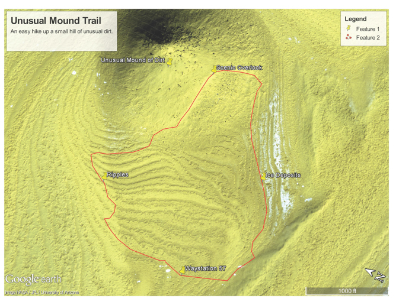

Hikes that are out of this world!


Unusual Mound Hike Information
- Hike Rating: Easy
- Distance: 1.51 miles
- Elevation Gain/Loss: 12.7ft/-12.5ft
- Average Slope: 0.3%/-0.3%
- Max Slope: 0.8%/-0.6%
- Amenities: Small waystation
Unusual Mound Hike
This hike takes you up a mound of some unusual dirt. The dirt's composition is still not fully understood. Be sure to check out the ripple land formations to the north and the ice deposits to the east. The area around the unusual mound provides a great place to view the rise of Mar's two moons, Phobos and Deimos.